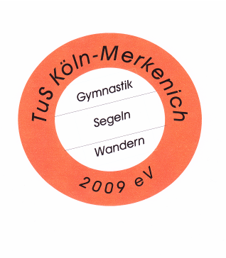

Die Sparte Wandern besteht nun schon seit fast 25 Jahren.
Hervorgegangen ist sie aus einer
Gruppe Wanderfreunden, die sich anfangs ganz privat
zusammen trafen um Wanderungen in der näheren und
weiteren Umgebung Kölns zu unternehmen.
Die meisten der Wanderer waren bei der
Wacker-Chemie beschäftigt und auch Mitglieder des
ursprünglich als Werksportverein tätigen Wacker-Köln-Merkenich. So war bald die Idee
geboren innerhalb dieses Vereins eine eigene Wandersparte zu gründen. Heute verfügt die
Sparte Wandern -die sich inzwischen unter dem Dach des TuS Köln-Merkenich befindet- über
einen Mitgliderstamm von etwa 30 Personen.
Zu den monatlichen Wanderungen treffen sich in
der Regel 20 - 25 Aktive.
Die Wanderziele werden größtenteils mit öffentlichen Verkehrmitteln
erreicht. Treffpunkt ist meist die Endhaltestelle der Linie 12 der KVB in Merkenich.
Die Mitglieder der Sparte befinden sich mittlerweile überwiegend im Seniorenalter. Die
Auswahl der Wanderstrecke trägt diesem Umstand Rechnung. So werden beispielsweise die
aktuell geplanten Touren in weitgehend ebenem Gelände stattfinden. Die Streckenlängen
variieren zwischen 8 und 11 km.
Die Teilnahme an den Wanderungen ist nicht auf
den Mitgliederstamm des TuS Köln-Merkenich
beschränkt. Gegen eine Teilnahmegebühr,
welche auch die Fahrtkosten beinhaltet können auch
Gäste mitwandern.
Im August eines jeden Jahres treffen sich die
Wanderer zu einem Grillabend und im Dezember
findet nach jährlicher Spartenversammlung eine Advents- bzw. Weihnachtsfeier statt.